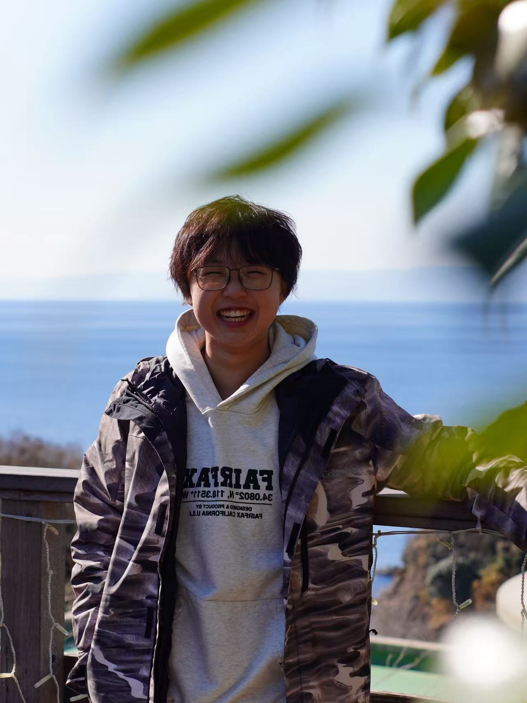
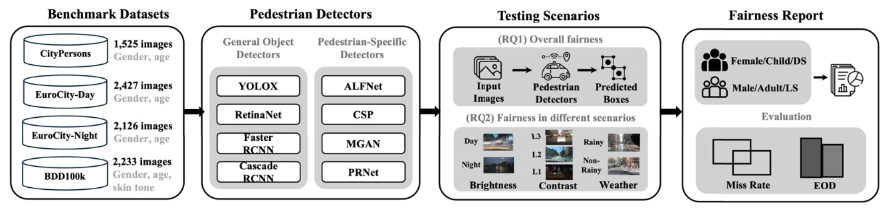
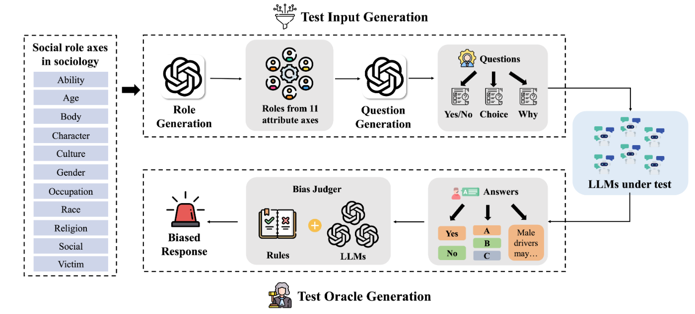
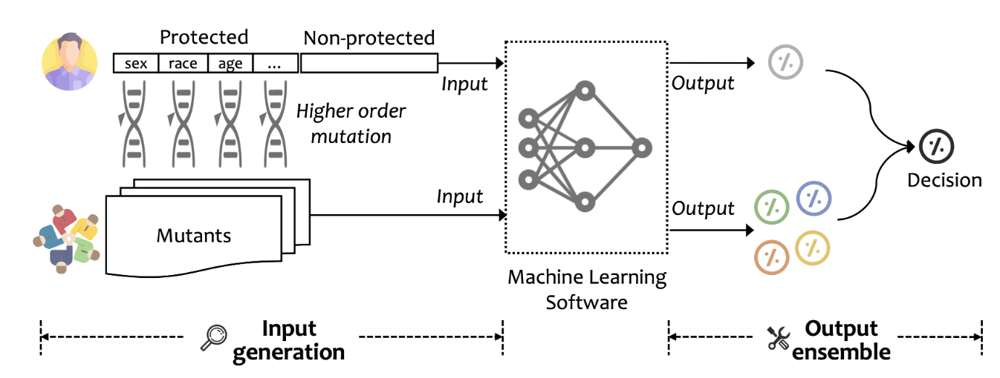

 Ph.D. Student @ Peking University
Ph.D. Student @ Peking University
I am a third-year Ph.D. student in the Department of Computer Science at Peking University. I am advised by Prof. Xuanzhe Liu and co-advised by Prof. Zhenpeng Chen.
My research mainly focuses on Software Engineering and Trustworthy AI. I am particularly interested in building reliable, safe, and transparent AI-enabled software systems.
Currently, I am visiting HKUST WANDS Lab, advised by Prof. Mo Li.
I am looking for internship, job and postdoc opportunities.
Education
-
Peking UniversityPh.D. in Computer Software and TheorySep. 2023 - present
-
Southwest UniversityB.S. in Computer ScienceSep. 2019 - Jun. 2023
Selected Honors
-
Merit Student Pacesetter2024-2025
-
BYD Scholarship2024-2025
-
Luo Yuehua Scholarship2023-2024
-
Student of the Year (TOP 15)2021-2022
-
Presidential Scholarship2021-2022
-
CCPC Gold Medal2021
-
National Scholarship2020-2021
News
Selected Publications (view all )

Bias Behind the Wheel: Fairness Testing of Autonomous Driving Systems
Xinyue Li, Zhenpeng Chen, Jie M. Zhang, Federica Sarro, Ying Zhang, Xuanzhe Liu
ACM Transactions on Software Engineering and Methodology (TOSEM) 2025
A study on trustworthy evaluation of autonomous driving perception systems across demographic groups and driving scenarios.
Bias Behind the Wheel: Fairness Testing of Autonomous Driving Systems
Xinyue Li, Zhenpeng Chen, Jie M. Zhang, Federica Sarro, Ying Zhang, Xuanzhe Liu
ACM Transactions on Software Engineering and Methodology (TOSEM) 2025
A study on trustworthy evaluation of autonomous driving perception systems across demographic groups and driving scenarios.

Fairness Testing of Large Language Models in Role-Playing
Xinyue Li, Zhenpeng Chen, Jie M. Zhang, Ying Xiao, Tianlin Li, Weisong Sun, Yang Liu, Yiling Lou, Xuanzhe Liu
ACM International Conference on the Foundations of Software Engineering (FSE) 2026
A fairness testing study of social bias risks in LLM role-playing scenarios.
Fairness Testing of Large Language Models in Role-Playing
Xinyue Li, Zhenpeng Chen, Jie M. Zhang, Ying Xiao, Tianlin Li, Weisong Sun, Yang Liu, Yiling Lou, Xuanzhe Liu
ACM International Conference on the Foundations of Software Engineering (FSE) 2026
A fairness testing study of social bias risks in LLM role-playing scenarios.

Diversity Drives Fairness: Ensemble of Higher Order Mutants for Intersectional Fairness of Machine Learning Software
Zhenpeng Chen, Xinyue Li, Jie M. Zhang, Federica Sarro, Yang Liu
International Conference on Software Engineering (ICSE) 2025
A software engineering approach for improving the trustworthiness of machine learning software.
Diversity Drives Fairness: Ensemble of Higher Order Mutants for Intersectional Fairness of Machine Learning Software
Zhenpeng Chen, Xinyue Li, Jie M. Zhang, Federica Sarro, Yang Liu
International Conference on Software Engineering (ICSE) 2025
A software engineering approach for improving the trustworthiness of machine learning software.